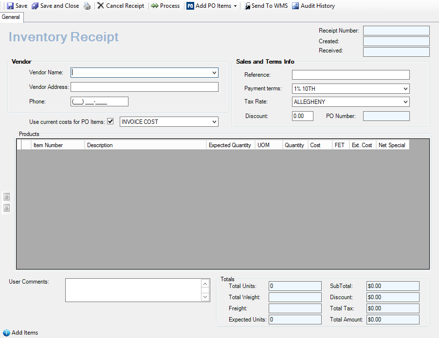
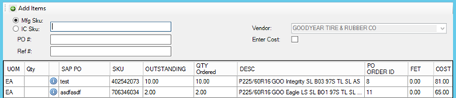
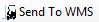

Inventory Receipt
Used to receive inventory when other than receipt of transfer.
Select from application toolbar, Select from dropdown

- Select Vendor from Dropdown and enter
- Select from toolbar
- Option 1: Choose items from multiple POs.
- Most commonly used. Below instructions are for this option
- Displays All PO’s for identified vendor
- Mfg. Sku will be default toggle
- Option 2: Add all items from a PO
- Option 1: Choose items from multiple POs.

- Enter Mfg. Sku number on packing list
- Enter Reference information (required) i.e. bill of lading number
- Enter quantity received on the correct PO line
- If less than PO, will display PO line item as partially received and will continue to display in PO list until all items have been received or cancelled
- If greater than PO
- Option 1: Enter PO quantity and create new receipt for the difference manually
- ***
 ***Option 2: Add additional quantity to PO
***Option 2: Add additional quantity to PO
Note: Option 1 for overage will require pricing to be verified and/or changed.
- When all items have been added, select
- Will populate and display on inventory receipt
- If WMS is NOT used, proceed to Process step below
- If WMS is used, select

and receive in WMS prior to processing inventory receipt- Automatically will assign receipt ID, save receipt, and display dialog box reflecting a successful save
- Status will become (sent to WMS)
- Once WMS has received product and pushed back receipt information into inventory receipt, open inventory receipt and verify total units received to packing list, and WMS documentation if present
- Quantity column will be populated from WMS
- Select Process
- Choose Process type from dialog box and select Continue Processing
- Process as Is (default)
- Cancel un-received items from the original PO
- Move un-received items to new PO
- Print inventory Receipt and follow company procedures
- Receipt will be in Processed status
- Inventory will be updated in POS
Audit History
Will display all events (adds, changes, deletes) for a specific receipt. Cost changes display changed from and changed to cost.